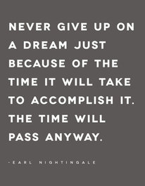

Just Because...poetry can either describe the poet by telling the reader what the poet both is and isn't, or it can address stereotypes or other social issues by giving a voice to the voiceless. Just Because... poems that describe the author start with a descriptive first line. The next three lines in each stanza tell what the poet is NOT. The final line restates the first line and adds a tag directing the reader to do something.
Directions: Write a Just Because...poem. Start by describing yourself in the first line of the poem. The next three lines in each stanza tell what you are NOT. The final line restates the first line and adds a tag directing the reader to do something.
Student Example:Just because I'm scared
Don't laught and giggle behind my head
Don't kid and play when I'm not there
Still ask me because I might play
Just because I'm scared
It doesn't mean I can't do it
It doesn't give you the right to talk about me
It doesn't stop me from having fun
Just because I'm scared
Still tell me everything you did
Can't wait until I get big
Just because I'm scared -- please try to be my friend
---Jack Kerouac (Grade 6)